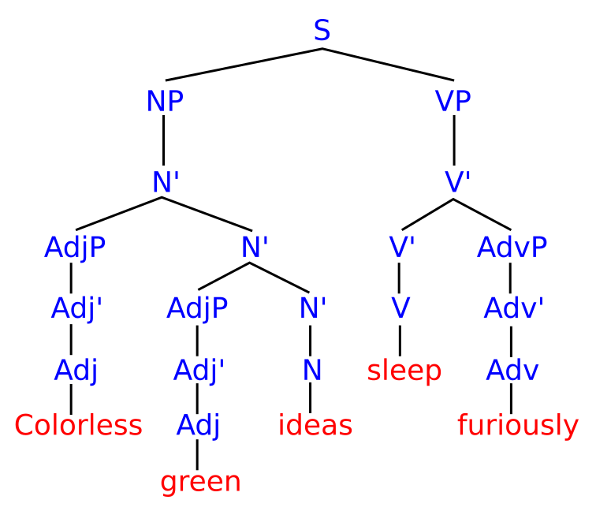

3살 아이를 생각해보자. 들은 문장은 몇천 개밖에 안 된다. 그런데 새 문장을 무한히 만든다. "엄마 양말 어디 갔어?"를 누가 가르쳐줬나? 아무도 안 가르쳤다. 입력은 턱없이 부족한데 출력은 풍부하다 — 촘스키는 이걸 빈약한 자극의 역설이라 불렀다.

구문 트리 · 이 문장이 문법적인 이유
촘스키의 설명: 뇌 안에 언어 회로가 이미 있다. 한국어·영어·아랍어 겉모습은 다르지만 뿌리 구조는 같다. 이걸 보편문법이라 부른다. 아이는 이 회로를 타고 나온다 — 그래서 빨리 배운다.
즉 언어는 경험으로 쌓는 습관이 아니라, 심장처럼 타고난 기관이라는 주장.